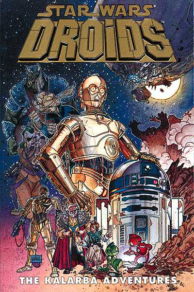

Dark Horse, the official publisher of Star Wars comics has provided the next item for our eBay auction benefiting the Starlight Starbright Children's Foundation. This gorgeously bound volume details the exploits of R2D2 and C3PO, and features a signature by the man behind everbody's favorite mindless philosopher.
You will be be bidding on Dark Horse Comics Star Wars: Droids - The Kalarba Adventures Signed Limited Edition Hardcover, written by Dan Thorsland and Ryder Windham, illustrated by Bill Hughes, Andy Mushynsky, and Ian Gibson, with cover art by Kilian Plunkett.
Artoo-Detoo and See-Threepio star in this series of misadventures that brim with the wonder and whimsy that made the films so popular. Whether faced with pirates, bounty hunters, or rock monsters, the droids never fail to find hope. This limited-edition hardcover features a dustjacket with art by Kilian Plunkett and the signature of actor Anthony Daniels. The tipped-in signature plate features the Ralph McQuarrie painting that George Lucas used to pitch the original story to the studio. The Smythe-sewn binding, foil-stamped bonded-leather cover, and slipcase make this volume a quality book collector's dream!
Check back soon for the next addition to our catalogue of auction items! Find out about all of the items announced so far at www.nyline.org/auction, and take a closer look in the picture gallery!